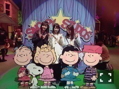
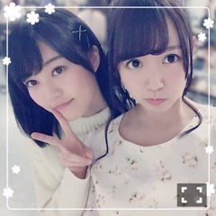
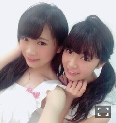

| 2016/01 12 Tue | ひめたん-0o0-その604 |
どうも( ´ ▽ ` )ﾉ
ドライなひめたんです( ´ ▽ ` )ﾉ
ちーちゃんのブログ見たかな
何回言うねん( ´ ▽ ` )ﾉ
でも、そういえばユニバで
ふたりに言われました
ひめたんは素でいる時が一番良いと。
何が？顔？声のトーン？
どの辺が違う？と聞いたら
全部、全部素でいる時の方が好きだと......。
ザックリだな～
自覚がないのでわからんのですが
もし興味のある方は良かったら
ドライなひめたんを引き出してみて下さい。

さて、この土日は握手会でしたね
来てくださった皆さん
ありがとうございました！
2日ともすごくたくさんの方が
遊びに来てくださったと聞きました
嬉しいなあ(´,,•ω•,,｀)
■個別握手会
1部

リボン柄のワンピース
ポニーテール
2部3部
お花柄のワンピース
3部から髪巻きました～
ワンピースデーかつポニーテールデー。
久々にちょっとガーリーでした
本当はね、こーゆーのが好きなんですよ
無理してないんですよ本当にね。ええ。
いくちゃんの生誕祭にて
ドッキリを仕掛け
お手紙を読ませていただきました！
いくちゃん本当にびっくりしてた！
終わってからもずっと
びっくりしてたよ～(笑)
お手紙も毎年読ませていただけて
幸せです( ˇωˇ )
■全国握手会

ひなちまとペアでした！
ひなちまファミリーの皆さん
お世話になりました！
ひめに会いに来てくれた人も
たくさんいてびっくりしました
ありがとう⊂( ˆωˆ )⊃♡
待ち時間が長くて
並ぶの大変だったよね。
それでも私たちに会いに来てくれて......
何度も言うようだけれど本当にありがとう。
感謝の気持ちでいっぱいです！
握手の時間でどれだけ伝えられているか
わからないけれど
普段は一方的に発信することが多いので
こうして直接お話できる時間は
とっても貴重で楽しいのです(´｡•ω•｡`)
充実した2日間でした！
2016年も頑張れそうです！
またお会いできるのを楽しみにしています♡
さて、日曜の夜はらじらー！サンデー
次回のゲストは
声優アーツにMachicoさん、
乃木坂から秋元真夏ちゃんが登場！
え、新年一発目の乃木坂週で
ひとりノリひめたんやるんですか！？
本当好きだね～
ここまで来たら皆さんの力で
このコーナー続けましょうよ。笑
メールたくさんお待ちしてます。
あ、ひめたんがノッてくれるかどうかは
皆さんにかかってるらしいですよ～
真夏さんへの応援メッセージや
コーナーへの投稿も
どんどん送ってください∩^ω^∩
真夏さんスタジオには2回目だけど
何かとよく名前出てくるよね～
今回も楽しみです！
おたよりの宛先はこちら。

あは♡エプロン写メ出てきた♡
そういえば、紅白の時NHKで
たくさんのアーティストさんや
スタッフさんが慌ただしくしてる中で
チームらじらーの皆さんをお見かけして
とてもホッとしたような(´｡•ω•｡`)
毎週金曜日はソニレコ配信日！
次回は黒猫チェルシーの皆さんが
来てくださいますよ！
今週は鍋やってるよ～観てね( ´ ▽ ` )ﾉ
チャンネル登録はこちらから。
乃木中観てくださってありがとう！
お聴き苦しい歌を電波で......
すみませんほんとにすみません( >_< )
次回も出るよ！
身内モノマネ大会！
さて、今年もお仕事楽しくしております
もう少ししたら
いろんな告知が出来そうです
今年の目標というのはいくつかあるけど
お仕事たくさんするぞー！
あと、お友達が欲しいよー！
(＊´・ω・＊)
コメント(1152)
2016/01/12 23:36